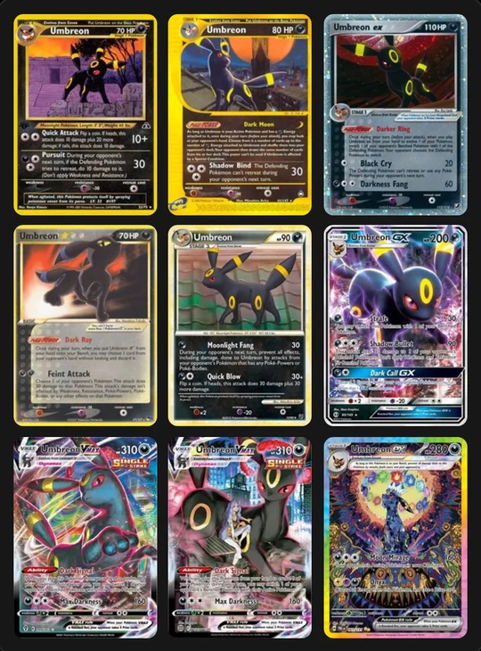

Pokémon binder page
The Umbreon binder page

The page, pocket by pocket
Read it left to right, top to bottom: the top row is the early years, the middle row the years between, and the bottom row the big modern cards.
| Card | Set | Year | |
|---|---|---|---|
| 1 | Umbreon | Neo Discovery | 2001 |
| 2 | Umbreon | Aquapolis | 2003 |
| 3 | Umbreon ex | Unseen Forces | 2005 |
| 4 | Umbreon, Gold Star | POP Series 5 | 2007 |
| 5 | Umbreon | Undaunted | 2010 |
| 6 | Umbreon GX | Sun & Moon | 2017 |
| 7 | Umbreon VMAX | Evolving Skies | 2021 |
| 8 | Umbreon VMAX, Trainer Gallery | Brilliant Stars | 2022 |
| 9 | Umbreon ex | Prismatic Evolutions | 2025 |
Three pockets that look different
Most of the page is a black Umbreon with yellow rings, which is what makes three pockets stand out. Pocket four is the Gold Star Umbreon from POP Series 5: Gold Star cards show shiny Pokémon, and shiny Umbreon's rings are blue. Pocket eight is a Trainer Gallery card from Brilliant Stars, so Umbreon shares it with its trainer. Pocket nine, from Prismatic Evolutions, is the most colourful pocket on the page. Put it last and the page ends on its brightest card.
Three layouts, compared
1. Oldest to newest. The page pictured above. One Umbreon per era, read like a timeline.
2. Day and night. Three Espeon on the top row, three Eevee in the middle and three Umbreon at the bottom. Eevee sits between its day evolution and its night one. Neo Discovery has all three, so the first column can be the 2001 cards.
Day and night: Umbreon holds the bottom row.
3. The big forms. One row each for GX, VMAX and ex. The builder lists Umbreon GX from Sun & Moon and the Hidden Fates Shiny Vault, Umbreon VMAX from Evolving Skies and the Brilliant Stars Trainer Gallery, and Umbreon ex from Unseen Forces and Prismatic Evolutions, so each row fills.
| Layout | Pages | Best for |
|---|---|---|
| Oldest to newest | 1 | Umbreon's whole history at a glance |
| Day and night | 1 | Espeon, Eevee and Umbreon together |
| Big forms | 1 | GX, VMAX and ex side by side |
Want every Eevee evolution instead? The Eeveelution page fits Eevee and all eight of its evolutions on one page.
Try it before you sleeve
Moving nine cards around a real page is slow, and every move risks a scuff. Try the order on screen first, as many times as you like.
- Open the free page builder. No account needed.
- Type Umbreon. The builder lists Umbreon cards with the set each one comes from. Add a set name, such as Umbreon Neo Discovery, to see only that set's cards.
- Tap one card for each pocket, oldest first. Pockets fill in the order you tap.
- Tap See page. Tap a card to take it out, then add another, until the page looks right.
- Keep the page with a free account, then sleeve the real cards in the same order.
Questions
How many Umbreon cards are there?
Dozens, once promos, jumbo cards and every version count. That is far too many for one page, so an Umbreon page is a choice of nine: one per era, one per form or your nine favourite drawings.
Which Umbreon starts the page?
The Umbreon from Neo Discovery, 2001. The Neo sets brought in the second generation of Pokémon, Umbreon among them.
Why does one Umbreon have blue rings?
Shiny Umbreon has blue rings instead of yellow. The Gold Star Umbreon in pocket four, from POP Series 5, shows the shiny Umbreon.
Can I swap in a different Umbreon?
Yes. Type Umbreon and a set name in the builder, such as Umbreon Neo Discovery, and tap the card you want. Tap a card on the page to take it out.
Is the page builder free?
Yes. Planning a page needs no account. Keeping it makes a free account, which never asks for payment details.
More guides: Binder theme ideas · Eeveelution page · Gengar page · Charizard page · Pikachu page · Binder page planner
Pokémon is a trademark of its owners. Beltstra is an independent app and is not affiliated with or endorsed by them.